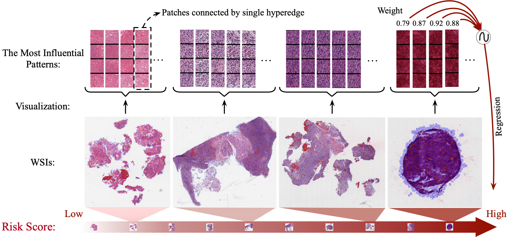
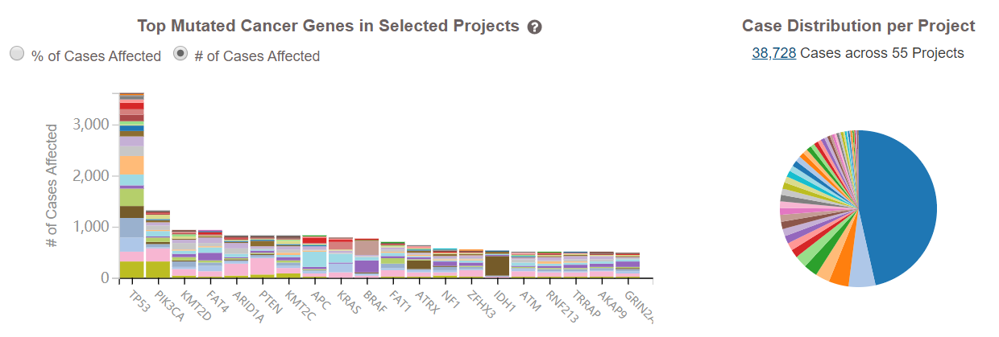
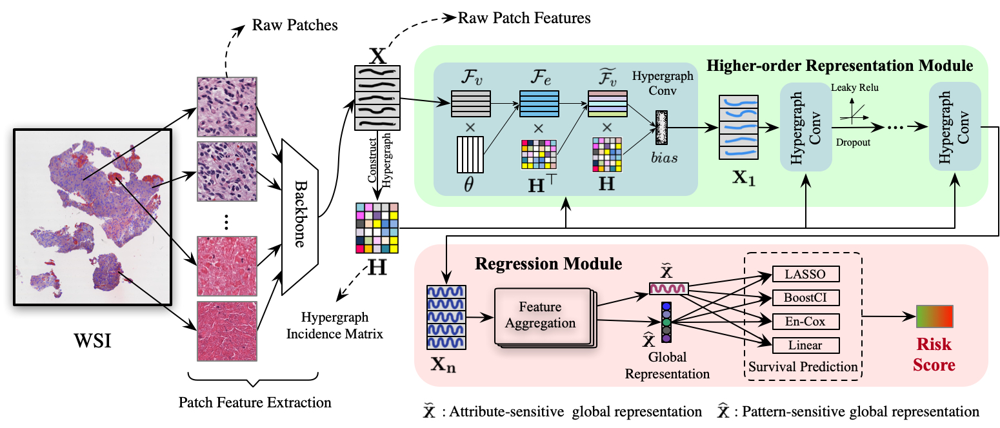
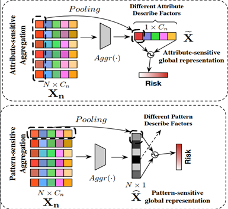

狄东林, 丰一帆
近年来，基于数十亿像素的全尺寸组织医学病理图像（WSI）对患者进行生存预测已引起越来越多的关注。这项任务的主要挑战是探索如何能基于信息丰富的特征，来有效反映患者生存状况。在本文中，我们介绍了一种称为HyperGraph回归网络（HGRNet）的超图回归框架，以应对生存预测的这一挑战。HGRNet能够通过基于超图结构的层级表示来挖掘影响生存状态的病理拓扑模式。我们对三种流行的癌症数据集（LUSC和GBM数据集以及NLST数据集）进行了广泛的实验。定量结果表明，所提出的方法始终在性能上一直领先于最新方法（LUSC为8.19％，GBM为5.56％，NLST为7.70％）。我们证明了提出的方法的潜力，可以作为生存状态分析工具，可以促进探索生存状态和不同病理拓扑模式之间的相互关系。

Fig 1. Visualization of the co-relationship between the survival status and different pathological patterns which include topological patterns or attribute patterns

Fig 2. Harmonized Cancer Datasets Genomic Data Commons Data
We mainly evaluate the proposed method on three datasets:
the lung cancer dataset LUSC and the brain carcinoma dataset GBM
from the generic cancer patient dataset TCGA, and the lung cancer dataset NLST.
These three datasets are used in two modes.
In the first mode, we follow the experimental settings of previous methods
and select parts of the whole-slide histopathological images from the three datasets for the
evaluation.
The datasets used in this mode are called the ``selected'' datasets.
In the other mode, we evaluate the proposed method with its competitors on the complete data
from these three datasets.
We denote the datasets used in this mode as the ``complete'' datasets.
In our implementation, 5-fold cross-validation is employed to investigate the optimal parameter
setting.
To validate the stability of the proposed method, we run 5 times for each set of parameter
setting and the mean performance is computed for the comparison.
You could download TCGA-LUSC and TCGA-GBM by clicking following button.(~1.3 TB)
In this section, we introduce the structure of the proposed HyperGraph Regression Network (HGRNet). As shown in Fig. 3, the pipeline of HGRNet mainly consists of three sequential steps. In the first step, we extract raw patch-level features from patches sampled from the input original WSI data. After that, we feed the patch-level features to a representation module based on the hypergraph structure to learn higher-order representation. Last, we use a regression module to produce the final result of the survival status from those of higher-order features. We next detail each individual step.

Fig 3. Illustration of our pipeline hypergraph regression network (HGRNet). Firstly, we utilize a backbone model to extract raw patch-level features then the hypergraph signal matrix X and the hyperedges incidence matrix H are generated. After training the survival-specific hypergraph by several hypergraph spectral convolutional layers, the regression module leverages the higher-order representation and masters the skills to predict the risk of given WSIs.
To overcome the weakness of pair-wise graph structure and learn the effects on the health of each factor, it is an inevitable choice to give the hypergraph structure a shot, which was proved has the ability to handling complex correlations and grouping information effectively. In this work, we adopt and modify the hypergraph to learn the higher-order representation from patches extracted from the former stage, and propose a regression network based on which furthermore.

Fig 4. The illustration of generating global representation from fine-tuned patch representation. The attribute-sensitive aggregating is pooling all patch feature into one for a specific channel(each column). Each value of the final vector is selected from the most remarkable value of all patch feature in the same column. And the pattern-sensitive aggregating is compressing each patch feature into one that can mostly represent the pattern of the patch, so that to explore the correlation between the potential pattern and the survival time.
Predict survival status using the fine-tuned patch-level features, i.e. the higher-order representations. A translational global feature is generated from distributed patch-level features, which are fed into a traditional/deep-based model for final survival regression. And the final step is fitting the aggregated features and predicting survival status.